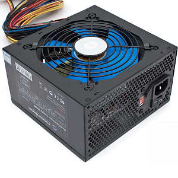

Składamy komputer. Dobieramy odpowiedni zasilacz. Część 2.
Na co zwrócić uwagę, kupując zasilacz do komputera?

Aby powrócić kliknij baner.
Certyfikaty i zabezpieczenia
Wybierając zasilacz powinniśmy celować w modele oznaczone certyfikatami sprawności. Zależnie od budżetu można wybierać te z wyższymi, lecz nigdy nie polecam schodzenia poniżej bariery certyfikatu 80 PLUS.
Czym w ogóle jest sprawność zasilacza? Można ją określić jako stosunek prądu pobranego do wykorzystanego. Innymi słowy zasilacz niecertyfikowany może pobrać zdecydowanie więcej prądu z gniazdka, aby przekazać taką samą moc do podzespołów, co zasilacz certyfikowany. Jak sama nazwa wskazuje certyfikat 80 PLUS potwierdza testami, że dana jednostka nie powinna zejść poniżej 80% sprawności.
Oficjalne dane odnośnie sprawności dla poszczególnych poziomów obciążenia (10, 20, 50 i 100%) i konkretnych certyfikatów można znaleźć w tabelce poniżej.
Czym w ogóle jest sprawność zasilacza? Można ją określić jako stosunek prądu pobranego do wykorzystanego. Innymi słowy zasilacz niecertyfikowany może pobrać zdecydowanie więcej prądu z gniazdka, aby przekazać taką samą moc do podzespołów, co zasilacz certyfikowany. Jak sama nazwa wskazuje certyfikat 80 PLUS potwierdza testami, że dana jednostka nie powinna zejść poniżej 80% sprawności.
Oficjalne dane odnośnie sprawności dla poszczególnych poziomów obciążenia (10, 20, 50 i 100%) i konkretnych certyfikatów można znaleźć w tabelce poniżej.
Poniżej wymienione są dodatkowo zabezpieczenia, które powinien posiadać markowy PSU:
- OVP – Over Voltage Protection – Zabezpieczenie przed zbyt wysokim napięciem;
- SCP – Short Pircuit Protection – Zabezpieczenie przeciwzwarciowe;
- OPP – Over Power Protection – Zabezpieczenie przeciw przeciążeniowe;
- SIP – Surge & Inrush Protection – Zabezpieczenie przed prądami udarowymi;
- UVP – Under Voltage Protection – Zabezpieczenie przed zbyt niskim napięciem;
- OTP – Over Temperature Protection – Zabezpieczenie przed zbyt wysoką temperaturą;
- OCP – Over Current Protection – Zabezpieczenie przed przeciążeniem stabilizatora;
Na co jeszcze zwrócić uwagę?
- Aktywne – najprostszy typ chłodzenia, w którym PSU schładzane jest za pomocą wentylatora uruchomionego przez cały czas działania;
- Półpasywne – również schładzany wentylatorem, ale w tym przypadku uaktywnia się on jedynie wtedy, gdy potrzebne jest schłodzenie;
- Pasywne – najcichsze chłodzenie bez użycia wentylatorów. Spotykane zazwyczaj w drogich konstrukcjach.
Zasilacze modularne posiadają tę zaletę, że wszystkie kable są odpinane. Możemy dzięki temu pozbyć się nieużywanych, „walających się” wiązek i zaoszczędzić miejsca w obudowie, co jest nie tylko bardziej estetyczne, ale również pozytywnie wpływa na temperatury. Dodatkowo dobrze by było gdyby kable były oplecione „siateczką”. Lepiej to wygląda i ułatwia organizację, bo trzyma wiązkę zespojoną ze sobą.
6.Zasilacz
